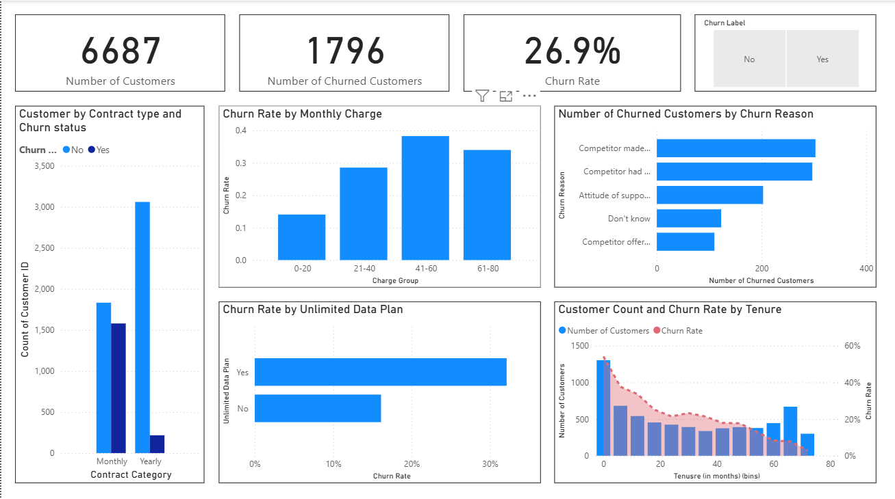

Telecom companies lose customers constantly, and most churn dashboards stop at reporting the overall rate. I wanted to know which single factor actually predicted churn best, so I segmented the churn rate by contract type, monthly charge band, tenure, and data plan, then built the dashboard around whichever factor turned out to matter most.
Power BI · DAX · Power Query
Telecom customer churn analysis
An interactive Power BI dashboard built on 6,687 telecom customer records, digging into why customers leave and which contract terms actually predict it.

Power BI dashboard: churn rate, contract type, tenure, and churn reason breakdowns.
Overview
Key finding
Contract type dominates everything else in the dataset:
Month-to-month customers churn at more than 16× the rate of two-year customers. Competitor-related reasons were the most common cause cited among customers who left.
Recommendation
Prioritize retention offers around converting customers off month-to-month billing early, rather than reacting once usage or complaints spike. The contract itself is the highest-leverage lever available, ahead of pricing or service quality fixes.
What I'd add next
A cohort view by signup month would show whether the month-to-month churn rate has been getting better or worse over time, not just where it stands today.